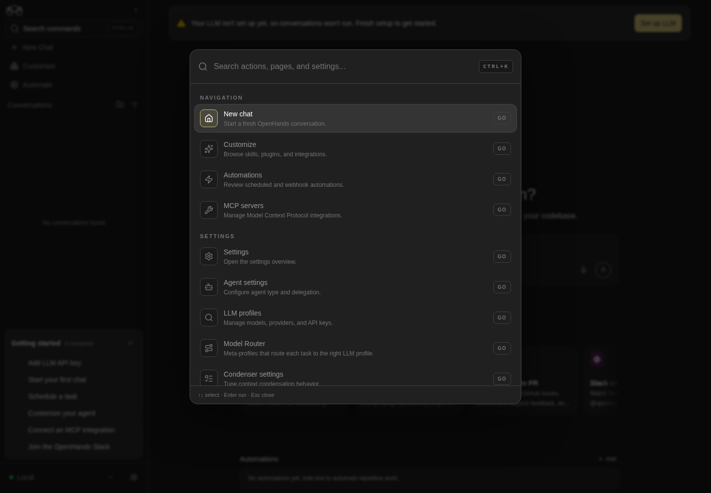

How to get to it
- Any page in the app: the left rail (desktop) or the hamburger (phone,
browser viewport phone). - Direct URLs:
/(the default home, or a redirect to the pinned page),/conversations,/customize,/automations,/settings. - Command menu: press
Control+korMeta+kanywhere, or click Search commands (command-menu-trigger) in the rail or drawer. Type a page or setting name, then press Enter or click the row. - Hover a sidebar row to reveal its pin. Hover the collapsed rail's logo to reveal the expand chevron.
- Settings → Application (
/settings/app): the Show Getting Started checklist switch. - The Getting started card: click an item row to go to its page, or hover it for the preview.
- Keyboard:
Control+kalso works while the composer has focus; Tab moves from the search input into the option list.
Before you start
Start with the common launch and health checks, then follow this family’s preconditions in order. Recipes share the fixtures and state named below.
Preconditions:
- Baseline state (launched, doctored,
onboard --skipdone), desktop viewport, sidebar expanded, no home pin, checklist shown. F02.checklist-progress(LLM and chat items) needscontrol-openhands llm preset deepseekand one conversation (control-openhands conversation start --prompt "Reply with only the word: ok" --wait --timeout 180). Run both before theF02.conversation-listbullet. The preset writes through the API, socontrol-openhands browser reloadbefore you read the LLM item. The conversation-header hamburger check inF02.mobile-drawerreuses that conversation.F02.update-tile(the sidebar tile) is blocked unless the installed version is older than npmlatestand the browser can reachregistry.npmjs.org. The Settings → Application check runs either way.F02.alert-banneris blocked on the local backend, whose config always reports no alerts; it needs a Cloud backend that publishes them.F02.settings-404-modalis blocked: it needs a backend whose settings endpoint returns 404.F02.checklist-all-completeneeds an automation and an MCP server on top of the four items above. Both are added through the UI from two fixtures (see that bullet) and deleted again afterwards.
Behavior inventory
26 stable behavior IDs and their expected behavior
F02.pin-as-homehovering Customize or Automate reveals a pin. Pinning makes/redirect to that page, pinning the other one moves the pin, and unpinning restores the default home. The pin is stored per backend and org. Read recipe ↓F02.settings-linkthe gear next to the backend selector, and the collapsed Settings icon, open/settingsin the same tab for a local backend. On desktop that redirects to/settings/agents. Read recipe ↓F02.conversation-listthe expanded rail embeds the conversation list (conversation-panel). The list itself belongs to the conversations family. Read recipe ↓F02.mobile-drawerat phone width the rail is hidden and a hamburger (sidebar-mobile-menu-toggle) opens a 300 px drawer. The hamburger is in the top bar, or in the chat header on conversation pages. The drawer closes on its chevron, Escape, a backdrop click or any route change. Read recipe ↓F02.mobile-top-barat phone width, settings sub-pages and Customize detail pages (/skills,/mcp,/plugins,/apps) show a Back chevron that returns to/settingsor/customize. Read recipe ↓F02.checklistafter onboarding, the expanded rail shows a Getting started card with N complete and six items. They link to/settings/llm,/conversations,/automations,/settings/agents,/mcpand the external Slack invite. Read recipe ↓F02.checklist-item-linksclicking an item's row navigates in the same tab to its route (for example Schedule a task opens/automations) without marking the item done. Read recipe ↓F02.checklist-progressitems get a check and a strikethrough when done. The LLM item completes when a profile is configured, Start your first chat when a conversation exists, Customize your agent after a visit to/settings/agents, and Join Slack on click. Read recipe ↓F02.checklist-previewhovering an item shows a preview with a description, a Documentation link and an action button that navigates. Read recipe ↓F02.checklist-minimizethe card header minimizes and expands the card, and the state survives a reload. Read recipe ↓F02.checklist-hidethe Show Getting Started checklist switch in Settings → Application hides the card (it stays hidden after a reload) and can show it again. Read recipe ↓F02.checklist-all-completethe card disappears once all six items are complete. Completion is recomputed from current data, so deleting the automation or the MCP server brings the card back. Read recipe ↓F02.super-admin-setup-guideon an OpenHands Enterprise (cloud) backend withENABLE_SUPER_ADMIN, the first Super Admin (/mepermissions includemanage_super_admins) sees a floating Setup guide panel in the lower-right corner withn/4progress, the steps Add an LLM, Choose an automation template, Add an integration, Invite users and Optional: SAML / instance, aNext: <step>status and a Start link for that step (the positive Enterprise path remains unverified here). Close collapses it to a pill that reopens it. While the guide loads or shows, the Getting started card is hidden. Local backends never show it and make no/api/admin/setup-staterequest (#17969). Read recipe ↓F02.update-tilewhen npmlatestis newer than the running version, a New version tile (agent-canvas-version-tile) opens an update modal with the npm and Docker commands. The tile is never shown in locked-Cloud mode. Read recipe ↓F02.settings-404-modalif the backend's settings return 404, the LLM settings modal opens by itself. Other settings fetch errors show a toast.F02.error-toastsfailed requests show a top-right error toast with the product or server message, and the toast closes by itself. Read recipe ↓
Readable recipes
Read each script from top to bottom. Code is copied from the map; prose gives the action, expected observation, and conditions. <id>, <run> and similar placeholders stand for values from your own run. Short forms such as browser count continue the same control-openhands invocation; they are kept as documented.
Expected observations describe the recipe’s contract. Captures below selected recipes show representative real states from this snapshot; they do not mark every mapped behavior as passed. Follow cleanup before moving to another family.
No recipes match. Try another word or a behavior ID.
Sidebar links #
- Do
control-openhands browser goto /conversations - Do
control-openhands browser click 'testid=sidebar-skills-link' - Wait
control-openhands browser wait-url '/mcp$' - ExpectThe URL ends in
/mcpbecause desktop/customizeredirects there. - Check
control-openhands browser attr 'testid=sidebar-skills-link' class - Notethe class contains
bg-tertiary(the active style), and - Check
control-openhands browser attr 'testid=sidebar-skills-link' aria-currentis
page. - NoteRepeat
browser gotowith/skills,/pluginsand/apps; each time the class still containsbg-tertiaryandaria-currentis stillpage. - Do
control-openhands browser click 'testid=sidebar-automations-link' - Check
control-openhands browser url(ends in
/automations) and - Check
control-openhands browser attr 'testid=sidebar-automations-link' aria-current(
page); - Check
control-openhands browser attr 'testid=sidebar-skills-link' aria-currentis now
null. - Do
control-openhands browser click 'testid=sidebar-conversations-link' - Do
control-openhands browser click 'aside[data-collapsed] >> role=link[name="OpenHands Logo"]' - Noteboth leave the URL at
/conversations.
Pin as home #
- NoteFrom
/conversationsrun - Check
control-openhands browser visible 'testid=sidebar-pin-home-toggle-customize'(
false), - Do
control-openhands browser hover 'testid=sidebar-skills-link' - Notethe same
visible(true), then - Do
control-openhands browser click 'testid=sidebar-pin-home-toggle-customize' - Check
control-openhands browser attr 'testid=sidebar-pin-home-toggle-customize' aria-pressed(
true). - Do
control-openhands browser goto / - Wait
control-openhands browser wait-url '/mcp$' - Notethe URL ends in
/mcp. - Do
control-openhands browser screenshot 'aside[data-collapsed]' --feature F02.pin-as-home --name customize-pinned - Notethe screenshot shows a filled pin on the Customize row with no hover.
- NoteMove the pin: run
- Do
control-openhands browser hover 'testid=sidebar-automations-link' - Do
control-openhands browser click 'testid=sidebar-pin-home-toggle-automations' - ExpectThe Customize pin's
aria-pressedbecomesfalse, and - Do
control-openhands browser goto / - Notelands on
/automations. - NoteUnpin with
- Do
control-openhands browser click 'testid=sidebar-pin-home-toggle-automations' - Do
control-openhands browser goto / - Check
control-openhands browser count 'testid=home-screen' - ExpectThe URL stays
/and the count is1. - Do
control-openhands browser storage --valuesshows
oh:pinned-home-route:<backend>:<org>asnull.
Collapse and expand #
- Do
control-openhands browser click 'testid=sidebar-collapse-toggle' - Check
control-openhands browser attr 'aside[data-collapsed]' data-collapsed(
true). - Do
control-openhands browser reload - Notethe attribute is still
true,browser storage --valuesshowsopenhands-sidebarwith"collapsed":true, and - Check
control-openhands browser bbox 'aside[data-collapsed]' - Notereports width
60. - Check
control-openhands browser count 'testid=sidebar-onboarding-checklist'is
0. - NoteFor the tooltip, hover one icon, then another:
- Do
control-openhands browser hover 'testid=sidebar-automations-link' - Do
control-openhands browser hover 'testid=sidebar-skills-link' - Wait
control-openhands browser wait 'role=tooltip' - Check
control-openhands browser text 'role=tooltip'(
Customize). - NoteFor the backend popover, run
- Do
control-openhands browser hover 'testid=collapsed-backend-selector-link' - Noteits
aria-expandedistrue,browser testids --filter backendlistsadd-backend-menu-itemandmanage-backends-menu-item, and - Do
control-openhands browser screenshot --feature F02.sidebar-collapse --name backend-popovershows the popover.
- NoteExpand by clicking empty rail space with
- Do
control-openhands browser click 'aside[data-collapsed]'(
data-collapsedbecomesfalse). - NoteCollapse again, then run
- Do
control-openhands browser hover 'aside[data-collapsed] >> role=link[name="OpenHands Logo"]' - Notethe toggle's class has
opacity-100and itsaria-labelisExpand sidebar. - Do
control-openhands browser click 'testid=sidebar-collapse-toggle' - Noteexpands the rail.
Settings gear #
- ExpectThe previous bullet expanded the rail: collapse it with
- Do
control-openhands browser click 'testid=sidebar-collapse-toggle' - Do
control-openhands browser click 'testid=collapsed-settings-link' - Wait
control-openhands browser wait-url '/settings' - NoteExpand it again with
- Do
control-openhands browser click 'testid=sidebar-collapse-toggle' - Do
control-openhands browser goto /conversations - Do
control-openhands browser click 'testid=backend-selector-settings-link' - Check
control-openhands browser url - Notethe URL ends in
/settings/agents. - Check
control-openhands browser attr 'testid=backend-selector-settings-link' targetis
null(same tab).
Conversation list #
- ExpectAfter
conversation start(preconditions), run - Do
control-openhands browser goto /conversations - Check
control-openhands browser testids 'testid=conversation-panel' - ExpectThe list includes
conversation-card.
Open and close the menu #
- NoteFrom
/conversationsrun - Check
control-openhands browser text 'testid=command-menu-trigger' - ExpectIt reads
Search commandsandCTRL+Kon Linux and Windows (the hint isCtrl+K, drawn in capitals; macOS and iOS show⌘K). - Do
control-openhands browser press Control+k - Check
control-openhands browser visible 'testid=command-menu'(
true), - Do
control-openhands browser eval "document.activeElement && document.activeElement.id"(
command-menu-search) and - Check
control-openhands browser text 'testid=command-menu >> css=kbd'(
CTRL+K, the header hint). - Do
control-openhands browser screenshot --feature F02.command-menu-open-close --name openshows the dimmed, blurred backdrop.
- Do
control-openhands browser press Escape - Note
browser count 'testid=command-menu'is0. - Do
control-openhands browser press Meta+k(count
1), - Do
control-openhands browser type 'testid=command-menu >> role=combobox' secr - Do
control-openhands browser click 'testid=command-menu >> role=button[name="Close command menu"]'(the backdrop; count
0). - Do
control-openhands browser click 'testid=command-menu-trigger' - Check
control-openhands browser value 'testid=command-menu >> role=combobox' - Notethe value is
""because the query was cleared on close. - NoteClose it with
- Do
control-openhands browser press Escape - Notefocus is back on the row (
control-openhands browser eval "document.activeElement.dataset.testid"iscommand-menu-trigger). - NoteCollapsed rail: run
- Do
control-openhands browser click 'testid=sidebar-collapse-toggle' - Do
control-openhands browser click 'testid=command-menu-trigger'(the search icon; count
1), - Do
control-openhands browser press Escape - Notethen expand with
- Do
control-openhands browser click 'aside[data-collapsed]'

The command menu lists navigation, settings and actions over the dimmed application.
Representative documentation capture, not a complete run of this recipe or family. Captured on an isolated local backend at desktop viewport using the current main checkout.
How this screenshot was taken
canvas: 1.26.0 · agent server: 1.53.0 · sdk: 1.53.0 · automation: 1.19.0
OH_VERIFY_RUN="$OH_VERIFY_RUN" control-openhands browser goto /
OH_VERIFY_RUN="$OH_VERIFY_RUN" control-openhands browser wait testid=home-screen
OH_VERIFY_RUN="$OH_VERIFY_RUN" control-openhands browser click testid=open-workspace-button
OH_VERIFY_RUN="$OH_VERIFY_RUN" control-openhands browser wait role=dialog
OH_VERIFY_RUN="$OH_VERIFY_RUN" control-openhands browser press Escape
OH_VERIFY_RUN="$OH_VERIFY_RUN" control-openhands browser press Control+k
OH_VERIFY_RUN="$OH_VERIFY_RUN" control-openhands browser wait testid=command-menu
OH_VERIFY_RUN="$OH_VERIFY_RUN" control-openhands browser screenshot testid=command-menu --feature F02.command-menu-open-close --name command-menuEvery item navigates #
- ExpectThe previous bullet closed the menu: run
- Do
control-openhands browser press Control+k - Check
control-openhands browser snapshot 'testid=command-menu' --feature F02.command-menu-items --name all-items - Noteit lists 14 options under Navigation, Settings and Actions, with Model Router after LLM profiles and Agent Context after Condenser settings.
- NoteClose it with
- Do
control-openhands browser press Escape - Noteand rest the pointer off the list with
- Do
control-openhands browser hover 'testid=command-menu-trigger'(see Gotchas).
- NoteFor each item run
- Do
control-openhands browser goto /conversations - Do
control-openhands browser press Control+k - Do
control-openhands browser type 'testid=command-menu >> role=combobox' '<term>' - Do
control-openhands browser press Enter - Wait
control-openhands browser wait-url '<route>$' - NoteExpected routes:
New chat→/conversations,Customize→/mcp(via/customize),Automations→/automations,MCP servers→/mcp,Settings overview→/settings/agents(via/settings),Agent settings→/settings/agents,LLM profiles→/settings/llm,Model Router→/settings/meta-llm,Condenser→/settings/condenser,Agent Context→/settings/agent-context,Verification→/settings/verification,Application→/settings/app,Secrets→/settings/secrets.browser count 'testid=command-menu'is0after each run. - NoteClick path:
- Do
control-openhands browser goto /settings/app - Noteopen the menu, type
new chat, then - Do
control-openhands browser click 'testid=command-menu >> role=option[name=/New chat/]' - Notethe URL becomes
/conversations.
Toggle sidebar #
- Do
control-openhands browser press Control+k - Do
control-openhands browser type 'testid=command-menu >> role=combobox' toggle - Do
control-openhands browser press Enter - Check
control-openhands browser attr 'aside[data-collapsed]' data-collapsed(
true). - NoteRepeat with the term
sidebar; the value returns tofalse.
Search, empty state, keyboard #
- ExpectThe Toggle sidebar action closed the menu: open it with
- Do
control-openhands browser press Control+k - Do
control-openhands browser fill 'testid=command-menu >> role=combobox' theme - Check
control-openhands browser count 'testid=command-menu >> role=option'(
1, Application, matched by its keywords). - ExpectThe term
settings secretleaves1option,secret automationsleaves0(all terms must match) andmodelleaves3(MCP servers, LLM profiles, Model Router). - NoteFill
qa-zzz-nothing, then run - Check
control-openhands browser text 'testid=command-menu >> role=listbox'(
No commands found/Try a page, action, or setting name.) and - Do
control-openhands browser screenshot --feature F02.command-menu-search --name no-results - Do
control-openhands browser press Enter - Notethe menu stays open and the URL does not change.
- Do
control-openhands browser click 'testid=command-menu >> role=button[name="Clear search"]' - Notethe value is
""and the count is back to14. - NoteKeyboard:
- Check
control-openhands browser attr 'testid=command-menu >> role=combobox' aria-activedescendant - Notestarts at
command-menu-option-new-chat. - Do
control-openhands browser press ArrowUp - Notewraps to
command-menu-option-toggle-sidebar, andArrowDownreturns tonew-chat, then moves tocustomize. - Do
control-openhands browser hover 'testid=command-menu >> role=option[name=/Secrets settings/]' - Notesets the value to
command-menu-option-secrets-settings.
Open in a new tab #
- NoteWith the menu open and
secretstyped, - Check
control-openhands browser attr 'testid=command-menu >> role=option[name=/Secrets settings/]' hrefis
/settings/secrets. - Do
control-openhands browser click 'testid=command-menu >> role=option[name=/Secrets settings/]' --button middle - Do
control-openhands browser tabs - Notetab 1 is
/settings/secrets, tab 0 keeps its URL, andbrowser count 'testid=command-menu'is still1. - Do
control-openhands browser close-tab 1 - ExpectThe modifier path works the same:
- Do
control-openhands browser click 'testid=command-menu >> role=option[name=/Secrets settings/]' --modifiers Control - Noteopens tab 1 with the menu still open; close that tab too.
- ExpectThe click leaves focus on the option;
- Do
control-openhands browser press Escape - Notestill closes the menu (count
0).
Keyboard focus #
- NoteFrom
/conversationsrun - Do
control-openhands browser click 'testid=chat-input' - Do
control-openhands browser press Control+k - Note
browser count 'testid=command-menu'(1) and - Do
control-openhands browser eval "document.activeElement && document.activeElement.id"(
command-menu-search): the shortcut opens the menu from inside the composer. - Do
control-openhands browser press Tab - Notethe same
evalreturnscommand-menu-option-new-chat. - Do
control-openhands browser press Escape - Notecloses the menu from the option (count
0), and - Do
control-openhands browser eval "document.activeElement.dataset.testid"returns
chat-input: focus is back in the composer.
Phone drawer #
- Do
control-openhands browser viewport phone - Do
control-openhands browser goto /conversations - Check
control-openhands browser visible 'aside[data-collapsed]'is
false. - Do
control-openhands browser click 'testid=sidebar-mobile-menu-toggle' - Wait
control-openhands browser wait 'testid=sidebar-mobile-drawer' - Check
control-openhands browser bbox 'testid=sidebar-mobile-drawer' - Notegives width
300,insideViewporttrueandpageHorizontalOverflowfalse, and - Do
control-openhands browser screenshot --feature F02.mobile-drawer --name openshows the full rail.
- NoteClose paths, each followed by
- Wait
control-openhands browser wait 'testid=sidebar-mobile-drawer' --state detached - Do
control-openhands browser click 'testid=sidebar-mobile-drawer-close' - Do
control-openhands browser press Escape - Do
control-openhands browser click 'testid=sidebar-mobile-drawer >> testid=sidebar-automations-link'(route change; the URL becomes
/automations); and a backdrop click to the right of the drawer, - Do
control-openhands browser mouse-click 350 400(on
/conversations,control-openhands browser click 'testid=submit-button' --forcealso lands on the backdrop, because the empty composer's send button sits at x≈326 under it). - NoteOn a conversation page (
browser gotothe URL fromconversation start), - Check
control-openhands browser bbox 'testid=sidebar-mobile-menu-toggle'is at the top-left of the chat header.
- Do
control-openhands browser screenshot --feature F02.mobile-drawer --name conversation-headershows it beside the title, and clicking it opens the drawer.
- NoteReturn with
- Do
control-openhands browser viewport desktop
Back chevron #
- ExpectThe Phone drawer bullet returned to desktop: run
- Do
control-openhands browser viewport phone - Do
control-openhands browser goto /settings/llm - Check
control-openhands browser attr 'testid=sidebar-mobile-back-button' aria-label(
Settings). - Do
control-openhands browser click 'testid=sidebar-mobile-back-button' - Check
control-openhands browser url - Notethe URL is
/settings, and on that pagebrowser count 'testid=sidebar-mobile-back-button'is0. - Do
control-openhands browser screenshot --feature F02.mobile-top-bar --name settings-rootshows only the hamburger above the settings menu.
- NoteDo the same from
/skills: the label isCustomizeand the click lands on/customize, which on phone is the hub (extensions-mobile-hub).
Phone command menu #
- NoteAt phone width open the drawer, then run
- Do
control-openhands browser click 'testid=sidebar-mobile-drawer >> testid=command-menu-trigger' - Check
control-openhands browser bbox 'testid=command-menu >> role=listbox' - Notereports
insideViewporttrueandpageHorizontalOverflowfalse, and - Do
control-openhands browser screenshot --feature F02.command-menu-phone --name openshows it.
- Do
control-openhands browser press Escape - Notecloses only the menu:
browser count 'testid=command-menu'is0and - Check
control-openhands browser visible 'testid=sidebar-mobile-drawer'is still
true. - NoteReopen it with
- Do
control-openhands browser click 'testid=sidebar-mobile-drawer >> testid=command-menu-trigger' - Notetype
secretsand press Enter; - Wait
control-openhands browser wait-url 'secrets$' - Notepasses and
- Wait
control-openhands browser wait 'testid=sidebar-mobile-drawer' --state detached - Notepasses.
Checklist card #
- ExpectThe phone bullets above leave the phone viewport on
/settings/secrets: run - Do
control-openhands browser viewport desktop - Do
control-openhands browser goto /conversations - Check
control-openhands browser count 'testid=sidebar-onboarding-checklist >> role=listitem'(
6) and - Check
control-openhands browser text 'testid=sidebar-onboarding-checklist' - ExpectThe first lines are
Getting startedandN complete. - Check
control-openhands browser snapshot 'aside[data-collapsed]'shows the six links:
/settings/llm,/conversations,/automations,/settings/agents,/mcpandhttps://openhands.dev/joinslack.
Item links #
- Check
control-openhands browser click 'testid=sidebar-onboarding-checklist-item-schedule-task' --expect-url '/automations(\?|$)' - Check
control-openhands browser click 'testid=sidebar-onboarding-checklist-item-configure-llm' --expect-url '/settings/llm(\?|$)' - Noteboth pass,
browser tabsstill lists one tab, andbrowser count 'testid=sidebar-onboarding-checklist-item-schedule-task >> css=span.line-through'stays0(visiting is not completing).
Progress #
- NoteEach completed item renders a struck-through label, so
- Check
control-openhands browser count 'testid=sidebar-onboarding-checklist-item-<id> >> css=span.line-through'is
1. - Do
control-openhands browser goto /settings/agents - Notethen come back;
customize-agentis done. - Do
control-openhands browser click 'testid=sidebar-onboarding-checklist-item-join-slack' - Note
join-slackis done andbrowser tabsshows an external Slack tab, which you close with - Do
control-openhands browser close-tab 1 - ExpectAfter
llm preset deepseek, run - Do
control-openhands browser reload(the open page does not refetch settings written through the API), then
- Wait
control-openhands browser wait 'testid=sidebar-onboarding-checklist-item-configure-llm >> css=span.line-through' --timeout 15000 - ExpectAfter
conversation start,start-conversationis done. - ExpectThe header count rises each time (
4 completeafter these four).
Item preview #
- Do
control-openhands browser hover 'testid=sidebar-onboarding-checklist-item-join-slack' - Do
control-openhands browser hover 'testid=sidebar-onboarding-checklist-item-connect-mcp' - Wait
control-openhands browser wait 'testid=sidebar-onboarding-checklist-preview-connect-mcp' --timeout 5000 - Check
control-openhands browser text 'testid=sidebar-onboarding-checklist-preview-connect-mcp' - Noteit reads the title, the description,
DocumentationandConnect. - Check
control-openhands browser attr 'testid=sidebar-onboarding-checklist-preview-docs-connect-mcp' hrefis
https://docs.openhands.dev/overview/model-context-protocol. - NoteTake
- Do
control-openhands browser screenshot --feature F02.checklist-preview --name connect-mcp - Do
control-openhands browser click 'testid=sidebar-onboarding-checklist-preview-action-connect-mcp' - Wait
control-openhands browser wait-url '/mcp$'
Minimize #
- Do
control-openhands browser click 'testid=sidebar-onboarding-checklist-toggle' - Check
control-openhands browser attr 'testid=sidebar-onboarding-checklist' data-minimized(
true) andbrowser count 'testid=sidebar-onboarding-checklist >> role=listitem'(0). - NoteAfter
- Do
control-openhands browser reload - Notethe attribute is still
trueand the toggle'saria-labelisExpand checklist. - NoteClick the toggle again to restore
false.
Hide from settings #
- Do
control-openhands browser goto /settings/app - Check
control-openhands browser click 'text=Show Getting Started checklist' - Note
browser count 'testid=sidebar-onboarding-checklist'is0. - NoteAfter
- Do
control-openhands browser reload - Notethe count is still
0, and - Check
control-openhands browser eval "document.querySelector('[data-testid=show-getting-started-checklist-switch]').checked"is
false. - NoteClick the same text again; the count is
1.
All complete #
- NoteStart with the four items above done (
5 completewould mean one fixture is left over). - NoteArrange two fixtures: a minimal stdio MCP server,
- Arrange
control-openhands fixture file --name qa-f02-mcp.py --content "$(printf '%s\n' 'import sys,json' 'for line in sys.stdin:' ' m=json.loads(line)' ' if "id" not in m: continue' ' r={}' ' if m.get("method")=="initialize": r={"protocolVersion":m["params"].get("protocolVersion","2024-11-05"),"capabilities":{"tools":{}},"serverInfo":{"name":"qa","version":"1"}}' ' elif m.get("method")=="tools/list": r={"tools":[]}' ' sys.stdout.write(json.dumps({"jsonrpc":"2.0","id":m["id"],"result":r})+"\n"); sys.stdout.flush()')" - Arrange
control-openhands fixture file --name qa-f02.automation.json --content '{"version":1,"kind":"automation","spec":{"name":"QA_F02 Done","trigger":{"type":"cron","schedule":"0 0 1 1 *","timezone":"UTC"},"enabled":false,"prompt":"Reply with the single word: pong. Do not run any tools."}}' - NoteAdd the server in the UI:
- Do
control-openhands browser goto /mcp - Do
control-openhands browser click 'testid=mcp-add-custom-server' - Do
control-openhands browser click 'testid=server-type-dropdown' - Do
control-openhands browser click 'role=option[name="STDIO"]' - Do
control-openhands browser fill 'testid=name-input' qa_f02_mcp - Do
control-openhands browser fill 'testid=command-input' python3 - Do
control-openhands browser fill 'testid=args-input' "$OH_VERIFY_RUN/evidence/_fixtures/qa-f02-mcp.py" - Do
control-openhands browser click 'testid=mcp-custom-editor >> testid=submit-button' - Wait
control-openhands browser wait 'testid=mcp-custom-editor' --state detached - ExpectThe header reads
5 complete. - NoteImport the automation:
- Do
control-openhands browser goto /automations - Do
control-openhands browser click 'testid=automations-add-automation' - Do
control-openhands browser click 'testid=automations-import-automation' - Do
control-openhands browser upload 'testid=automations-import-file' "$OH_VERIFY_RUN/evidence/_fixtures/qa-f02.automation.json" - Do
control-openhands browser click 'testid=import-automation-confirm' - Wait
control-openhands browser wait 'testid=import-automation-modal' --state detached - NoteNow
browser count 'testid=sidebar-onboarding-checklist'is0, still0after - Do
control-openhands browser reload - Do
control-openhands browser screenshot 'aside[data-collapsed]' --feature F02.checklist-all-complete --name railshows the rail without the card.
- NoteRestore and prove it comes back: open the card's kebab with
- Do
control-openhands browser click '[data-testid^="automation-card-"] >> has-text=QA_F02 Done >> role=button[name="Automation actions"]' - Do
control-openhands browser click 'role=list >> has-text=Export >> role=button[name="Delete"]' - Do
control-openhands browser click 'role=heading[name="Delete automation"] >> xpath=.. >> role=button[name="Delete"]' - Do
control-openhands browser reload - Notethe card count is
1again (5 complete). - Do
control-openhands browser goto /mcp - Do
control-openhands browser click 'testid=mcp-server-detail-qa_f02_mcp' - Do
control-openhands browser click 'testid=mcp-custom-editor-delete' - Do
control-openhands browser click 'testid=confirmation-modal >> testid=confirm-button' - Do
control-openhands browser reload - Note
testid=mcp-installed-emptyis back and the card reads4 complete.
Setup guide #
- NoteLocal:
- Check
control-openhands browser count 'testid=super-admin-setup-guide'is
0atdesktopandphone,browser count 'testid=sidebar-onboarding-checklist'is1, and - Check
control-openhands browser network --filter setup-state - Notereports
total0. - ExpectThe positive path is blocked locally: it needs an OHE backend with
ENABLE_SUPER_ADMINwhose/api/admin/setup-statereturns aguide_org_id,guide_dismissedfalseand at least one unfinished required step, signed in as the first Super Admin.
Update tile #
- ExpectThe tile is blocked in an up-to-date checkout or without registry access.
- NoteCheck with
- Check
control-openhands browser count 'testid=agent-canvas-version-tile' - NoteWhen the count is
1, click it; the modal hasagent-canvas-update-command-npm,agent-canvas-update-command-dockerandagent-canvas-update-check-button. - ExpectThe manual check runs either way: on
/settings/app(control-openhands browser goto /settings/app; the previous bullet ends on/mcp),testid=agent-canvas-update-badgereadsUp to date(orNew version), - Do
control-openhands browser click 'testid=agent-canvas-update-toggle' - Noteopens
agent-canvas-update-modal, and - Do
control-openhands browser click 'testid=agent-canvas-update-check-button' - Notereports the result in
agent-canvas-update-status(You're running the latest version. What's newwhen current). - NoteClose it with
- Do
control-openhands browser click 'testid=close-agent-canvas-update-modal'
Error toast #
- Do
control-openhands browser goto /conversations/00000000-0000-0000-0000-000000000001 - Wait
control-openhands browser wait-text 'This conversation does not exist' - ExpectThe URL becomes
/conversations, and - Check
control-openhands browser screenshot --feature F02.error-toasts --name missing-conversationshows a top-right error toast.
- ExpectIt is the only toast:
- Check
control-openhands browser toastslists just the "This conversation does not exist, or you do not have permission to access it…" text, and
- Check
control-openhands browser toasts --historyhas no entry containing
this UI does not understand. - Wait
control-openhands browser wait 'text=This conversation does not exist' --state hidden - Notepasses within 30 s.
Check for errors #
- Check
control-openhands browser errors --app-only - Noteafter each group; it reports
pageErrors0andappErrors0. - NoteExternal
registry.npmjs.organdcdn.simpleicons.orgfailures are sandbox noise.
Restore #
- NoteLeave the sidebar expanded, unpinned, with the checklist shown and expanded, at
browser viewport desktop.
Gotchas and known limits
- The rail animates its width for 200 ms. A
bboxtaken right after the collapse click reads an intermediate width (about 70); measure afterbrowser reload. browser urlstraight after clicking Customize can still read/customize; desktop redirects to/mcpa moment later. Usebrowser wait-url '/mcp$'./settingsredirects to/settings/agentson desktop but shows the settings menu on phone. That redirect also marks the checklist's Customize your agent item done, so visiting Settings by any route completes it. The sidebar Customize link (/customize) does not.- The pin toggles are hidden until hover (
visibleisfalse), except a pinned row's toggle, which stays visible. They exist only on the expanded rail. - The two desktop elements share the label
Sidebar navigation, and settings pages add a secondcomplementarylandmark, sorole=complementaryis ambiguous. Useaside[data-collapsed]for the desktop rail andtestid=sidebar-mobile-drawerfor the drawer. - HeroUI tooltips (the collapsed rail and checklist previews) often stay closed on the first
browser hoverafter a navigation. Hover a neighbor first, then the target, andbrowser waitfor the tooltip. Nevercountit right away. - When collapsed, the expand chevron is
opacity-0 pointer-events-noneuntil the rail is hovered. A forced click on it lands on the logo link and does nothing; hover the logo first. - With the full list open, the command-menu panel covers the viewport center, so clicking the backdrop button by selector only works after a filter shortens the list (type
secrfirst).control-openhands browser mouse-click 1300 500hits the desktop backdrop with any list length. - The new-tab path works with
browser click ... --button middleand with--modifiers Control(orMeta). The phone drawer's backdrop has no handle;browser mouse-click 350 400clicks it. - Escape closes one layer at a time (#18044): with the command menu open over the phone drawer, the first Escape closes the menu and the second closes the drawer. Focus goes back to whatever had it when the menu opened: right after
browser goto /conversationsthat is the composer (chat-inputtakes focus on load), and on/settings/appit is<body>. - Toggle sidebar at phone width flips the stored desktop state without any visible change. Expand the rail again after returning to desktop.
- Typing does not reset the command menu's selection. The active option keeps its index, cut down to the shorter list, from the last ArrowUp/ArrowDown or hover, and a pointer resting where the list opens hovers the option under it. A term with several matches can then run a later one on Enter: after two
ArrowDownpresses, typingLLM profiles(LLM profiles and Model Router) selects Model Router. Before opening the menu for an Enter check, rest the pointer withbrowser hover 'testid=command-menu-trigger', and readaria-activedescendantbefore Enter when a term matches several items. Repro candidate, not yet filed. - The command menu's LLM profiles item uses a magnifier icon (
lucide-search, the same icon as the menu's search field). - The checklist card has no dismiss button. Hide it with the App settings switch or by completing every item. Clicking Join the OpenHands Slack counts as joining and opens an external tab you must close.
- Registry access depends on the sandbox. Where the browser cannot reach
registry.npmjs.org(ERR_CERT_AUTHORITY_INVALID), the update check reportsCouldn't check for updates; that is the environment, not the product. Where it can, the badge readsUp to dateand the check saysYou're running the latest version. - Adding a custom MCP server tests the connection first and refuses an unreachable one (
Could not reach the server..., orConnection failed: McpError: Connection closedforuvx mcp-server-timehere), so the all-complete recipe uses the local stdio fixture.
Source paths: src/components/features/sidebar/, src/components/features/command-menu/, src/stores/sidebar-store.ts, src/stores/command-menu-store.ts, src/hooks/use-pinned-home-route.ts, src/routes/index-home.tsx, src/utils/mobile-section-nav.ts, src/components/features/settings/agent-canvas-version-tile.tsx, src/components/features/alerts/alert-banner.tsx, src/utils/custom-toast-handlers.tsx, src/components/features/setup-guide/, src/api/cloud/setup-state-service.api.ts.